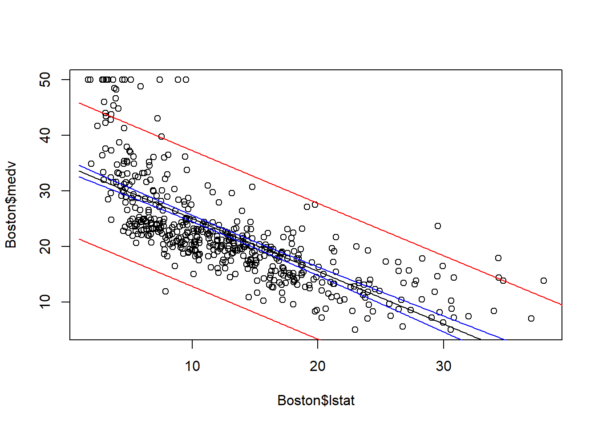
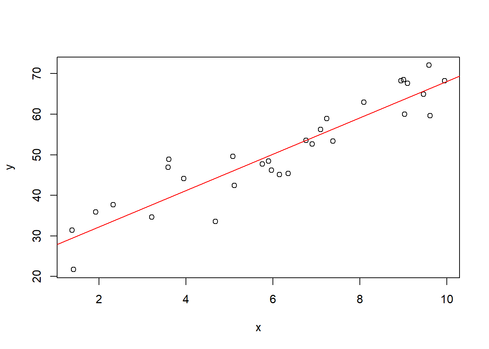

set.seed(123)
n <- 30
x <- runif(n, 1, 10)
y <- 20 + 5 * x + rnorm(n, 0, 5)6 R Code
When we look at a simple linear regression model, we need to pay attention to the following qualities and their intepretations.
- Parameter estimates (\(\hat\beta_0\), \(\hat\beta_1\))
- Fitted values and expected values (\(\hat y_i\)’s)
- Sum of Squares: SSE, SSR and SST
- Degrees of Freedom: \(df_{residual}\), \(df_{model}\) and \(df_{total}\)
- Variance measures (\(s^2\), \(s\) and \(R^2\))
- Significance tests (\(t\) and \(F\))
- Residuals (\(e_i\)’s)
- Confidence Interval and Prediction Interval
6.1 Simulated dataset
We’ll use a simulated dataset throughout to demonstrate each concept.
plot(x, y)
6.2 lm function and reports
In R, the model is described by the formula language y~x. It represents the model \(y=\beta_0+\beta_1x+\varepsilon\). The formula language will be discussed in more details in MLR.
We then use the lm function to solve the model and perform the analysis. What is left is to extract important information from the variable model.
model <- lm(y ~ x)
TipWilkinson–Rogers notation and Formula language
G. N. Wilkinson and C. E. Rogers introduced an algebraic system for describing the structure of linear and factorial models in [1]. This system later became known as the Wilkinson–Rogers notation.
John Chambers implemented this notation in the S language and developed the formula language for statistical model specification in the 1980s. This design was subsequently inherited by the R language.
plot(x, y)
abline(coef(model), col='red')
The main purpose is to understand the following two tables.
summary(model)
##
## Call:
## lm(formula = y ~ x)
##
## Residuals:
## Min 1Q Median 3Q Max
## -10.7147 -3.6014 0.0977 3.5281 9.4061
##
## Coefficients:
## Estimate Std. Error t value Pr(>|t|)
## (Intercept) 23.2998 2.3323 9.99 9.84e-11 ***
## x 4.4834 0.3497 12.82 3.07e-13 ***
## ---
## Signif. codes: 0 '***' 0.001 '**' 0.01 '*' 0.05 '.' 0.1 ' ' 1
##
## Residual standard error: 4.938 on 28 degrees of freedom
## Multiple R-squared: 0.8545, Adjusted R-squared: 0.8493
## F-statistic: 164.4 on 1 and 28 DF, p-value: 3.073e-13anova_alt(model)
## Analysis of Variance Table
##
## Df SS MS F P
## Source 1 4008.3 4008.3 164.4 3.0734e-13
## Error 28 682.7 24.4
## Total 29 4691.0Note that we don’t use the built-in anova function since it doesn’t provide all info we need. We use an alternative version of the anova fucntion. It can also be downloaded from here.
Code
### Defind anova_alt function;
anova_alt <- function(object, reg_collapse = TRUE, ...) {
if (length(list(object, ...)) > 1L) {
return(anova.lmlist(object, ...))
}
if (!inherits(object, "lm")) {
warning("calling anova.lm(<fake-lm-object>) ...")
}
w <- object$weights
ssr <- sum(if (is.null(w)) object$residuals^2 else w * object$residuals^2)
mss <- sum(if (is.null(w)) {
object$fitted.values^2
} else {
w *
object$fitted.values^2
})
if (ssr < 1e-10 * mss) {
warning("ANOVA F-tests on an essentially perfect fit are unreliable")
}
dfr <- df.residual(object)
p <- object$rank
if (p > 0L) {
p1 <- 1L:p
comp <- object$effects[p1]
asgn <- object$assign[stats:::qr.lm(object)$pivot][p1]
nmeffects <- c("(Intercept)", attr(object$terms, "term.labels"))
tlabels <- nmeffects[1 + unique(asgn)]
ss <- c(vapply(split(comp^2, asgn), sum, 1), ssr)
df <- c(lengths(split(asgn, asgn)), dfr)
if (reg_collapse) {
if (attr(object$terms, "intercept")) {
collapse_p <- 2:(length(ss) - 1)
ss <- c(ss[1], sum(ss[collapse_p]), ss[length(ss)])
df <- c(df[1], sum(df[collapse_p]), df[length(df)])
tlabels <- c(tlabels[1], "Source")
} else {
collapse_p <- 1:(length(ss) - 1)
ss <- c(sum(ss[collapse_p]), ss[length(ss)])
df <- c(df[1], sum(df[collapse_p]), df[length(df)])
tlabels <- c("Regression")
}
}
} else {
ss <- ssr
df <- dfr
tlabels <- character()
if (reg_collapse) {
collapse_p <- 1:(length(ss) - 1)
ss <- c(sum(ss[collapse_p]), ss[length(ss)])
df <- c(df[1], sum(df[collapse_p]), df[length(df)])
}
}
ms <- ss / df
f <- ms / (ssr / dfr)
P <- pf(f, df, dfr, lower.tail = FALSE)
table <- data.frame(df, ss, ms, f, P)
table <- rbind(
table,
colSums(table)
)
if (attr(object$terms, "intercept")) {
table$ss[nrow(table)] <- table$ss[nrow(table)] - table$ss[1]
}
table$ms[nrow(table)] <- table$ss[nrow(table)] / table$df[nrow(table)]
table[length(P):(length(P) + 1), 4:5] <- NA
table[(length(P) + 1), 3] <- NA
dimnames(table) <- list(
c(tlabels, "Error", "Total"),
c(
"Df", "SS", "MS", "F",
"P"
)
)
if (attr(object$terms, "intercept")) {
table <- table[-1, ]
table$MS[nrow(table)] <- table$MS[nrow(table)] * (table$Df[nrow(table)]) / (table$Df[nrow(table)] - 1)
table$Df[nrow(table)] <- table$Df[nrow(table)] - 1
}
structure(table,
heading = c("Analysis of Variance Table\n"),
class = c("anova", "data.frame")
)
}6.2.1 Intercept (\(\hat\beta_0\))
\(\hat\beta_0\) is the estimated intercept. It represents the expected value of \(y\) when \(x = 0\).
bhat_0 <- coef(model)['(Intercept)']
bhat_0
## (Intercept)
## 23.29982It can also be read from the summary table.
coefficients(summary(model))['(Intercept)', 'Estimate']
## [1] 23.29982
Caution
In some situations, the value \(x=0\) has no real-world meaning or is far outside the observed range of the data. Consequently, the intercept \(\hat\beta_0\), which represents the predicted response when \(x=0\), lacks a practical interpretation, although it remains an essential component of the regression model.
6.2.2 Slope (\(\hat\beta_1\))
\(\hat\beta_1\) is the estimated slope. It represents the expected change in \(y\) for a one-unit increase in \(x\). In other words, for each increase of 1 in the value of \(x\), the value of \(y\) will increase on average an amount equal to the slope.
bhat_1 <- coef(model)['x']
bhat_1
## x
## 4.483374It can also be read from the summary table.
coefficients(summary(model))["x", "Estimate"]
## [1] 4.4833746.2.3 Fitted Values (\(\hat{y}\))
Interpretation: Predicted values of \(y\) based on the regression equation for each observed \(x\).
fitted(model)
## 1 2 3 4 5 6 7 8
## 39.38705 59.59160 44.28556 63.41327 65.73140 29.62141 49.09245 63.79263
## 9 10 11 12 13 14 15 16
## 50.03380 46.20777 66.39177 46.07539 55.12342 50.88916 31.93624 64.09146
## 17 18 19 20 21 22 23 24
## 37.71292 29.48031 41.01492 66.29777 63.67643 55.73807 53.62788 67.90235
## 25 26 27 28 29 30
## 54.24116 56.37266 49.73646 51.75704 39.45090 33.71928These values are exactly \(\hat y_i=\hat\beta_0+\hat\beta_1x_i\). You may compare the numbers with the manuall computation.
bhat_0+bhat_1*x
## [1] 39.38705 59.59160 44.28556 63.41327 65.73140 29.62141 49.09245 63.79263
## [9] 50.03380 46.20777 66.39177 46.07539 55.12342 50.88916 31.93624 64.09146
## [17] 37.71292 29.48031 41.01492 66.29777 63.67643 55.73807 53.62788 67.90235
## [25] 54.24116 56.37266 49.73646 51.75704 39.45090 33.719286.2.4 Sum of Squares (SSE, SSR, SST)
- SST (Total Sum of Squares): Total variation in \(y\)
- SSR (Regression Sum of Squares): Variation explained by the model
- SSE (Error Sum of Squares): Unexplained variation
- Relationship: \(SST = SSR + SSE\)
They can all be directly read from the anova table.
SSR <- anova_alt(model)["Source", "SS"]
SSE <- anova_alt(model)["Error", "SS"]
SST <- anova_alt(model)["Total", "SS"]
SSR
## [1] 4008.298
SSE
## [1] 682.6885
SST
## [1] 4690.986You may double check the values with the manual calculations.
y_hat <- fitted(model)
y_mean <- mean(y)
SSR <- sum((y_hat - y_mean)^2)
SSE <- sum((y - y_hat)^2)
SST <- sum((y - y_mean)^2)
SSR
## [1] 4008.298
SSE
## [1] 682.6885
SST
## [1] 4690.986We could also verify that SST=SSE+SSR.
SST - SSR - SSE
## [1] -1.250555e-126.2.5 Degrees of Freedom
In general,
- \(df_{total}\) = \(n-1\)
- \(df_{model}\) = number of predictors (excluding intercept)
- \(df_{residual}\) = \(n\) - number of estimated parameters
For simple linear regression, \(df_{residual} = n - 2\) since we estimate 2 parameters: \(\beta_0\) and \(\beta_1\).
df_total <- length(y) - 1
df_residual <- df.residual(model)
df_model <- 1
df_total
## [1] 29
df_residual
## [1] 28
df_model
## [1] 1The degree of freedom is also recorded in the anova table.
df_total <- anova_alt(model)["Total", "Df"]
df_residual <- anova_alt(model)["Error", "Df"]
df_model <- anova_alt(model)["Source", "Df"]
df_total
## [1] 29
df_residual
## [1] 28
df_model
## [1] 1Note that \(df_{total}=df_{residual}+df_{model}\).
df_total - df_residual - df_model
## [1] 0In addition, the third column in the anova table can be computed from SS column and Df column.
- \(MSR=SSR/df_{model}\)
- \(MSE=SSE/df_{residual}\)
SSR / df_model - anova_alt(model)["Source", "MS"]
## [1] 9.094947e-13SSE / df_residual - anova_alt(model)["Error", "MS"]
## [1] 06.2.6 Residual Variance (\(s^2\)) and Standard error (\(s\))
\(s^2\) measures the variance of observed values (\(\sigma^2\)) from fitted values. Lower values indicate better fit. It is estimated by SSE/(n-2) which is MSE. Therefore it can be directly read from the anova table
anova_alt(model)['Error', 'MS']
## [1] 24.38173The standard error \(s\) is the square root of \(s^2\). Its interpretation is the same as the regular standard error: we expect most (approximately \(95\%\)) of the observed \(𝑦\)-values to lie within \(2𝑠\) of their respective least squares predicted values \(\hat y\).
The standard error can be directly read from the summary table.
sigma(model)
## [1] 4.937786We could verify the relation between these two values.
anova_alt(model)["Error", "MS"] - sigma(model)^2
## [1] 06.2.7 Coefficient of Determination (\(R^2\))
\(R^2\) is the proportion of variance in \(y\) explained by \(x\). It ranges from 0 to 1, with higher values indicating better fit.
\(R^2\) (and the adjusted \(R^2\) which will be discussed in MLR) can be read directly from the summary table. Note that in base R, r.squared and adj.r.squared don’t have their own functions. So we have to directly read the value from the summary table.
summary(model)$r.squared
## [1] 0.854468
summary(model)$adj.r.squared
## [1] 0.8492704On the other side, we could also estimate \(R^2\) using SSR/SST based on the values from the avnoa table.
SSR/SST
## [1] 0.8544686.2.8 Standard Error of Slope (\(s_{\hat\beta_1}\)) and t-test
We estimate the variance of \(\hat\beta_1\) and perform the t-test. The related statistics can be read directly from the summary table.
coefficients(summary(model))['x', ]
## Estimate Std. Error t value Pr(>|t|)
## 4.483374e+00 3.496691e-01 1.282176e+01 3.073410e-13We could access each statistic directly.
s_beta1 <- coefficients(summary(model))["x", "Std. Error"]
t_statistic <- coefficients(summary(model))["x", "t value"]
p_value_beta1 <- coefficients(summary(model))["x", "Pr(>|t|)"]
s_beta1
## [1] 0.3496691
t_statistic
## [1] 12.82176
p_value_beta1
## [1] 3.07341e-13Note that once we have t-statistic and the degree of freedom, we can use the t-distribution formula to compute the p-value.
t_statistic <- coefficients(summary(model))["x", "t value"]
dof_r <- df.residual(model)
pt(abs(t_statistic), dof_r, lower.tail = FALSE) + pt(-abs(t_statistic), dof_r)
## [1] 3.07341e-136.2.9 Overall Model Significance (F-test)
The F-test tests whether the regression model is significant overall. For simple linear regression, this is equivalent to the t-test for \(\beta_1\).
The F-statistic can be found from both the summary table and the the anova table.
summary(model)$fstatistic["value"]
## value
## 164.3976If we only use the summary table, the corresponding p-value should be computed from the F-statistic.
f_statistic <- summary(model)$fstatistic["value"]
nof <- summary(model)$fstatistic["numdf"]
dof_r <- summary(model)$fstatistic["dendf"]
pf(f_statistic, nof, dof_r, lower.tail = FALSE)
## value
## 3.07341e-13The F-statistic and the p-value can also be found directly from the anova table.
anova_alt(model)["Source", "F"]
## [1] 164.3976
anova_alt(model)["Source", "P"]
## [1] 3.07341e-13It is also computed by MSR/MSE.
anova_alt(model)["Source", "MS"] / anova_alt(model)["Error", "MS"]
## [1] 164.3976For simple linear regression, F-test only tests one variable. So it is equivalent to the t-test for \(\beta_1\). The relation is that in one variable case, the F-statistic is the square of the t-statistic.
f_statistic - t_statistic^2
## value
## 1.136868e-13In addition, the p-values for t-test and F-test are exactly the same in simple linear regression.
6.2.10 Residuals (\(e_i = y_i - \hat{y}_i\))
\(e_i\) stands for the differences between observed and predicted values.
residuals(model)
## 1 2 3 4 5 6
## 7.4885015 3.3713865 -10.7146876 4.8292907 -0.7743252 -7.9104910
## 7 8 9 10 11 12
## -1.4175726 -3.7637969 -3.8636805 -3.7853000 -6.7677385 3.5135781
## 13 14 15 16 17 18
## 1.1341252 -5.8113444 3.9644430 3.5329812 -3.1143338 1.8879962
## 19 20 21 22 23 24
## 3.1321842 5.7628012 4.7960369 3.2076747 -0.1146320 0.3099803
## 25 26 27 28 29 30
## -1.6367588 -2.9623235 -1.2930738 -6.3476343 9.4060724 3.9406407The residual analysis is a very important topic. The whole analysis can be summarized in the following plot. The details will be discussed in the last part of this course.
par(mfrow = c(2, 2))
plot(model)
par(mfrow = c(1, 1))
6.2.11 Confidence and Prediction Intervals
- Confidence Interval: CI for the mean response at a given \(x\) value
- Prediction Interval: CI for an individual new observation (wider than the CI computed above)
newx = data.frame(x=seq(0, 10, by=0.1))
pred.int <- predict(model, newx, interval='prediction')
conf.int <- predict(model, newx, interval='confidence')Both pred.int and conf.int are matrices, where the first column is the fitted value, the second column and the third column are the corresponding interval bounds.
plot(x, y)
lines(newx$x, pred.int[, 'fit'])
lines(newx$x, pred.int[, 'lwr'], col = "red")
lines(newx$x, pred.int[, 'upr'], col = "red")
lines(newx$x, conf.int[, 'lwr'], col = "blue")
lines(newx$x, conf.int[, 'upr'], col = "blue")